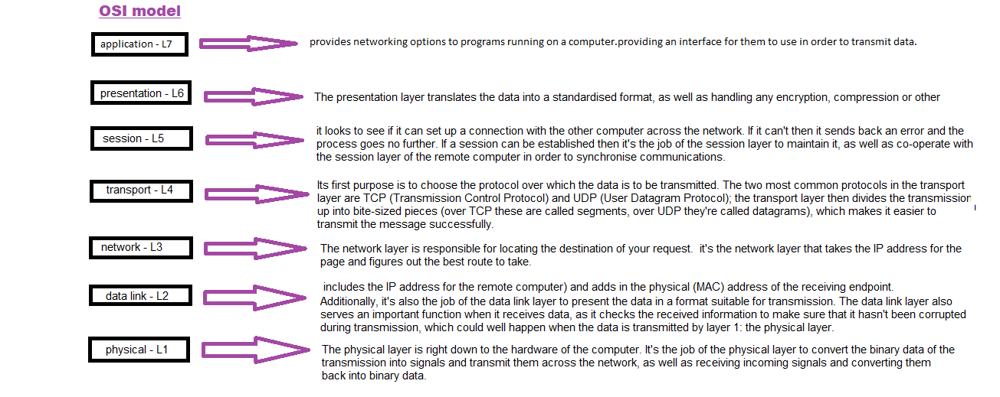
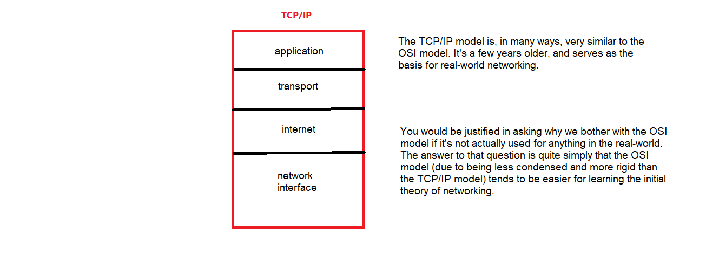

| OSI and TCP/IP models
OSI
The Open Systems Interconnection (OSI) model describes seven layers that computer systems use to communicate over a network. It was the first standard model for network communications, adopted by all major computer and telecommunication companies in the early 1980s.
The modern Internet is not based on OSI, but on the simpler TCP/IP model. However, the OSI 7-layer model is still widely used, as it helps visualize and communicate how networks operate, and helps isolate and troubleshoot networking problemsOSI was introduced in 1983 by representatives of the major computer and telecom companies, and was adopted by ISO as an international standard in 1984.

TCP/IP
TCP/IP stands for Transmission Control Protocol/Internet Protocol and is a suite of communication protocols used to interconnect network devices on the internet. TCP/IP is also used as a communications protocol in a private computer network
TCP/IP specifies how data is exchanged over the internet by providing end-to-end communications that identify how it should be broken into packets, addressed, transmitted, routed and received at the destination. TCP/IP requires little central management and is designed to make networks reliable with the ability to recover automatically from the failure of any device on the network.

- Source:
Imperva.com
Techtarget.com - Wrote:
- Updated:
- Posted: November 24, 2022 | Azar 3, 1401